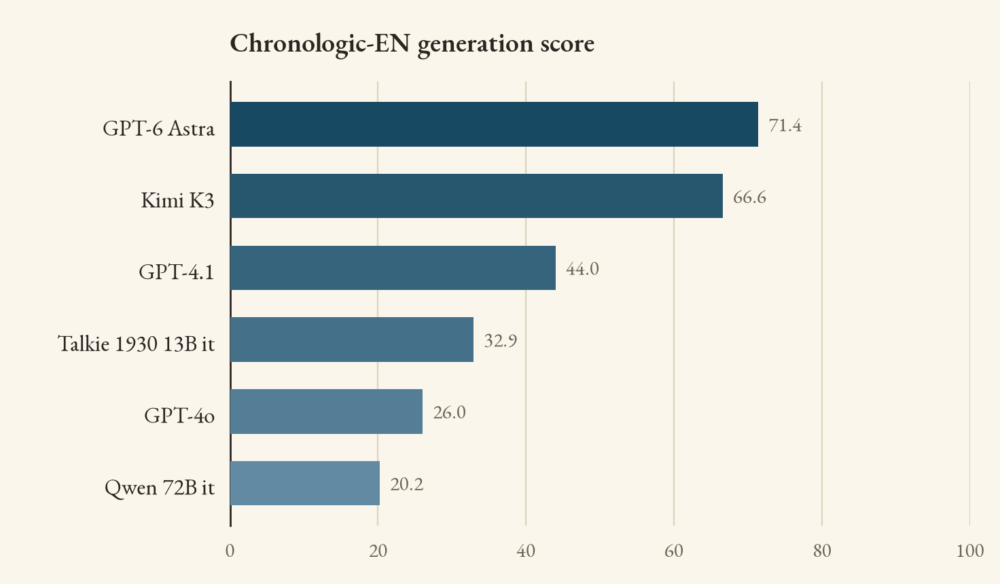

Historians and social scientists face a fundamental constraint: history only happens once. We cannot rerun the French Revolution, or survey past populations to understand variations in their opinions. Language models excite researchers because they seem to open a new avenue of inquiry that gets around this constraint. If we could reconstruct the space of probability that governed a period's writing, we might try a variety of experiments within that space:
- Interpolate to fill gaps.
- Test counterfactual scenarios.
- Identify pivotal voices and documents.
Meanwhile, people who aren't researchers just like the idea of having a conversation with another era. What does a voice from the past sound like? How does it respond to new ideas?
Why we need a benchmark
Scholars already know there are reasons to be cautious here. Our record of the past is biased and full of omissions. Reconstructing language may not be the same thing as reconstructing the people who produced it — especially because language models have a tendency to homogenize different perspectives.
What we don't yet have is any way to measure success and failure. We may suspect that commercial language models are caricaturing the past, but our evidence is anecdotal. Flying blind also makes it difficult to improve performance. For instance, several recently-released models (e.g. Talkie-1930) were trained only on sources before a cutoff date in the early twentieth century. How much authenticity is gained by that constraint? What gets lost? and is the trade-off worthwhile?
We believe measuring representation of the past — in the sense that matters to researchers — is very difficult. If we were just testing factual knowledge about the past, it might be straightforward: a benchmark of that kind could cover many centuries at once. (And commercial models would likely ace it.) Testing a model's ability to respond like a writer from the past is much harder. The benchmark we present here only covers one century (1830-1931), in one language (English), but took us a year to construct.
Why benchmarking the past is hard
To test mathematical reasoning, we can gather living experts, get them to write questions with known correct answers, and then give models a multiple-choice test.
None of that is possible if we want to measure representation of social diversity in the past. There are no living experts we can poll: while historians know a lot about the past, they are not trained to respond exactly like astronomers, fashion writers, and diarists of the 1870s. Instead, we have to extract ground truth answers from period documents. We pair each question with a "metadata frame" that indicates the period and genre of the text, and often the social position of the writer, to specify whose attitudes are being represented.
But even with social context specified, many questions have multiple valid answers. A ground truth answer can tell us that one Unitarian writer believed this in 1885. But other Unitarians might have answered the question differently. How can we estimate the penumbra of acceptable variation around each ground truth example?
Answering that question took us more than a year. The solution we finally settled on was to locate more than one ground truth answer for 10% of our questions, and use the variation between those answers to estimate the acceptable range of variation for other tricky questions.
Along the way, we discovered that multiple choice format is largely useless here. Advanced models turned out to be much better at recognizing correct answers than at generating them, which made multiple choice unrealistically easy. On the upside, this made automated judging more effective than we had initially expected. A moderately strong judge model can accurately assess the output of models stronger than itself.
What we learned
The most important thing we found may be that models have been getting better at representing the past. This is somewhat surprising, because we've had no benchmarks in this space, and it hasn't — as far as we know — been a major focus of commercial research. But we do see dramatic improvement. Scores on constrained generation, for instance, increase from 26% in August 2024 (GPT-4o) to 72% in August 2026 (GPT-5.6). Full explanation of the improvement will take more research, but the data we see so far are consistent with a hypothesis that general improvements in reasoning also make models better at ventriloquizing the past.
While we can also compare commercial frontier models to period-specific models (like Talkie-1930), it might be better to say that these two classes of tools are attempting different things. Commercial models are definitely better at free-text generation, in part because they can understand complex questions and work through long chains of reasoning. But they cannot, in principle, answer some questions researchers want to pose, because they don't measure the likelihood of a given response in a given context. Among models capable of reporting a likelihood, Talkie-1930-base is the strongest.
What happens next
None of the models we tested are perfectly reliable. Commercial frontier models are not challenged by knowledge questions, and are surprisingly good at matching their responses to the prose style of a given decade. But they still struggle with questions that ask them to respond like a writer (or a fictional character) in a specific social context.
Models trained only on period text struggle with a wider range of questions. In part this is because they haven't been trained to follow complex instructions as extensively as commercial models. But it's also true, as Benjamin Breen has pointed out, that removing texts after 1930 doesn't in itself give a model a specific historical perspective. Talkie-1930 kind of floats across a long timeline, occupying a more diffuse vantage point than any living human being ever did.
Once language models can reliably represent specific points of view, the next question to ask will be whose points of view they represent, and who has been left out. But at the moment, models still confront a more fundamental challenge. Open-weight models aren't reliably representing anyone's perspective; they tend to produce a kind of averaged, context-free voice. Frontier reasoning models can do better, but still fail through self-consciousness: overplaying a role in ways that telegraph a twenty-first-century understanding of its limitations.
Teaching language models to reproduce the limited and variable points of view that typify actual human writers is the first challenge that will have to be addressed before they can be reliable tools for historical research — or fully satisfying conversation partners, for that matter. Our benchmark is designed to measure progress toward that goal, but we will likely have to keep refreshing it and making it harder. We also hope to see other benchmarks emerge, measuring representation of other periods and languages. Chronologic-EN is only the initial step in what we hope will be a long journey.
The rest of this just illustrates formatting options
A paragraph with a margin note attached. On a wide screen the note sits out to the right; on a phone it folds in underneath with a rule beside it. Sidenotes are good for the caveat that would otherwise derail a sentence. Use them sparingly — two or three in the whole post.
An excerpt from a period source, set in its own well. Useful when you want the reader to see the kind of text the ground truth comes from before you explain how it was scored.
Author, Title (1887)
How it works
Prose with a list underneath:
- One point per line, kept short.
- Another point.
- A third.
And a snippet of the data format, if that helps:
{
"question_id": "...",
"answer_type": "same_book",
"year": 1887
}Results
| Model | Likelihood | Generation | Overall |
|---|---|---|---|
| Model A | 00.0 | 00.0 | 00.0 |
| Model B | 00.0 | 00.0 | 00.0 |
| Model C | 00.0 | 00.0 | 00.0 |

What the errors look like
Closing sections here.